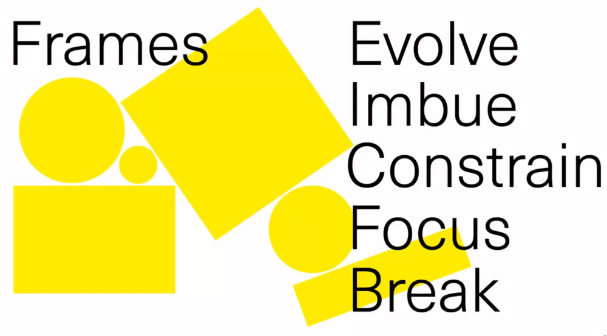
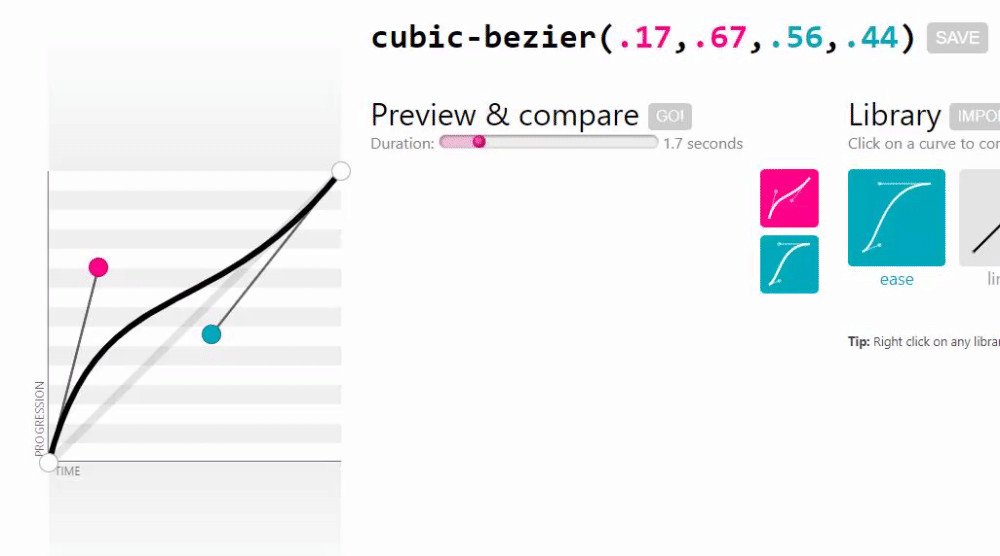
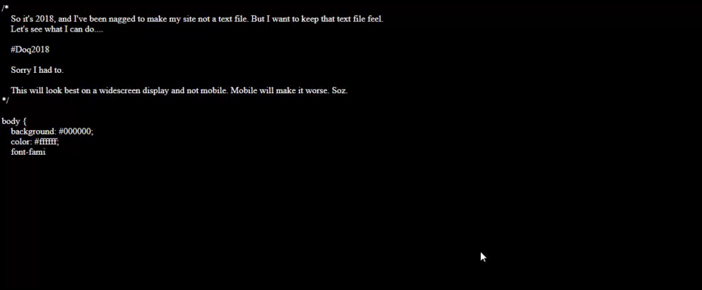
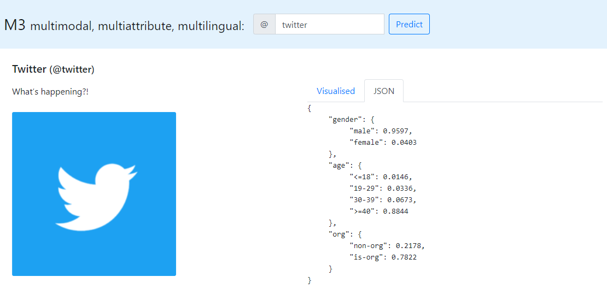
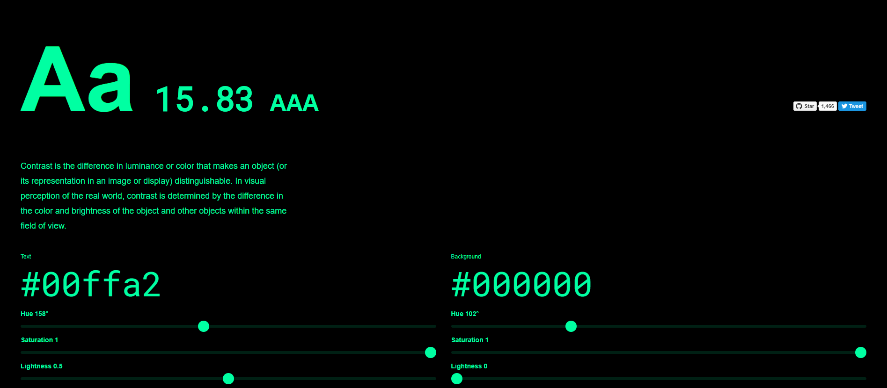

findings - week of 2.9.2019
Hello! it's been about thirty days since the last entry in this series. here's some of the interesting stuff I've found recently.
number one: programmable droplets for interaction.
water is probably the most common material on earth, so it makes sense that projects are coming out all the time with water as the main focus (this is something that I want to write about soon). this one, however, caught my attention because it's just so simplistic and elegant. it seems like the amount of possibilities for something like this are pretty massive, considering all the things that the creators can already demonstrate with it.

this is part of a subset of digital design known as 'calm technology'. It's basically about making tech that's there when you need it and practically invisible when you don't! I'll probably write a post going into detail on what that is pretty soon (for real this time).
number two: the grammar of frames.
this page is an essay on how frames shape and change our experiences for better or for worse. as stated in the first line: "we live in a world of frames".
in practice, a frame can be any number of things — a computer monitor, a piece of paper, a product's packaging. the point this essay makes is this: the frame in which content is presented has an undeniable, nontrivial impact on the consumer's experience of that content. it's an incredibly well-written and interesting article, so check it out!
number three: cubic-bezier.
cubic bezier is another tool created by one of my favorite web developers, lea verou. it allows for simple visualization of animations with timing functions defined by a bezier curve. it writes the curve function for you!
I don't understand any of the math behind bezier curves, but I do make a lot of animations, so this is a godsend.
number four: doq's homepage.
to be honest, I don't know much about doq. what I do know is that the homepage he made last year is pretty incredible. he uses css' content properties and pseudoelements to write almost the entirety of the page, and uses css escape sequences in order to draw some pretty cool ascii art.
the coolest part about this is the method he used here: he wrote a (javascript) class called SelfBuildingSite that runs through the pre-written css and writes it out on the screen, and also updates the style of the page in real time. there are a lot of regex involved. pretty slick.
number five: m3 web demo.
m3 is a deep learning project that can learn about people just from their social media profiles. I've been using this a lot, and it seems really really accurate. I think deep learning and ai is really cool, but as a web developer, I'm pretty much on the outside looking in. that's why web-based demos for things like this are pretty interesting. just enter a username and see what information appears — switch to the json tab for more detailed information.
this information is useful to me personally for several reasons, but it's also just interesting to look at. related: you can see what things twitter itself thinks you're interested in right here if you're logged in.
number six: colorable.
colorable is a color tool that allows you to pick two colors and see the contrast ratio between them, with aaa being the best and fail being most difficult to read.
the primary focus of this tool is ensuring acceptable contrast ratios, and it's really useful if you just need to look for a foreground / background color combination. check it out!
I'm essentially obsessed with color in any form, so I love this tool. in fact, it's one of the four things that inspired me to make emerald — the other three being contrast-ratio, monochrome, and coolors.
thanks for reading! I'll be back with a non-findings post soon, I think. I have a few ideas so far!
currently listening to:
- dear deathwaters by ivy hollivana (just recently bought this album and talked with the artist
briefly. she's really nice!)
- NULCTRL - meiso FLIP by silentroom (warning: loud)
-
NEW ERA by fox capture plan
- Oh,
Susquehanna by defiance, ohio
- CHOCOLATE PHILOSOPHY by yu
tokiwa
- Clinpf Eepfwoof by Ruby My Dear